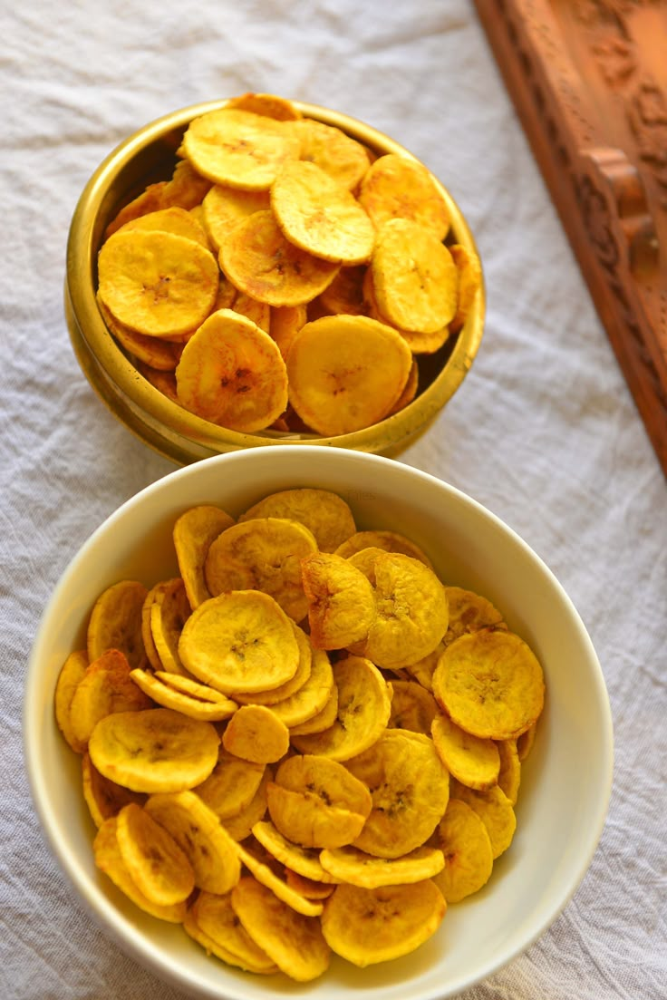

Plantain Chips (Kpekere)

Description
Plantain Chips, also known as Igbekere by the Yoruba
tribe of Western Nigerian and Kpekere by the Igbo tribe
of Eastern Nigeria.
Plantain Chips are easily the simplest plantain recipe to pull off.
Whether crunchy, salty, spicy or sweet, they are very tasty and extremely popular.
Ingredients
- Unripe Plantain
- vegetable Oil
- Tumeric (Optional)
- Cayenne Pepper (Optional)
- Salt
Steps
- Peel the Plantain, Slice into thin slices using a slicer or a sharp knife.
- Next, add water into a deep bowl, mix in some Turmeric and Salt.
- Add the sliced Plantains, leave for 5 minutes then sieve out the water mixture.
- Transfer Plantain unto a tray, blot dry using a paper towel
- Sprinkle some Cayenne Pepper on the chips, this is optional
- Now add Vegetable oil into a wok or deep frying pan, enough oil to deep fry the plantain chips
- Transfer onto a paper towel lined tray
- And it's ready, enjoyyy!!
Home